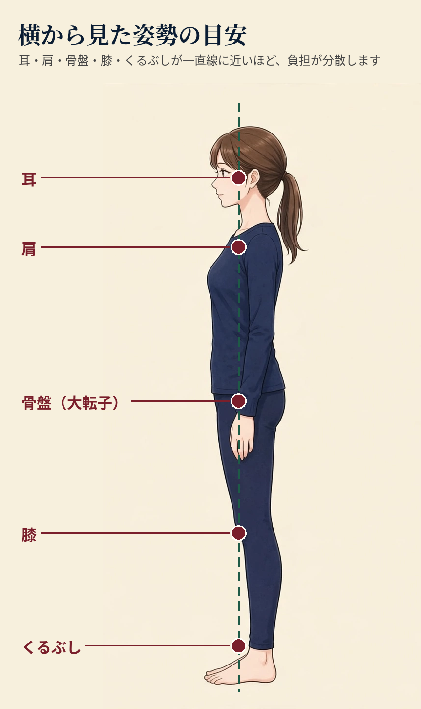

BEAUTY SEITAI GUIDE
美容整体とは
「美容整体」という言葉はよく目にするのに、整体やエステと何が違うのかを説明できる人は多くありません。このページでは、美容整体が何を見て、何を目指すケアなのかを、姿勢の仕組みから順にほどいていきます。
江坂で働く女性の一日を思い浮かべてみてください。朝、北大阪急行や御堂筋線に乗り、梅田や本町、新大阪へ向かう。日中はオフィスのデスクに向かい、夕方には人混みを抜けて帰ってくる。吹田・豊中・千里の住宅地に暮らす方なら、在宅ワークで自宅の椅子に座り続ける日もあるでしょう。姿勢への負担は、こうした何気ない毎日の繰り返しの中にあります。美容整体は、その繰り返しに働きかけるケアです。
美容整体とは何か
美容整体は、骨盤や背骨、肩甲骨といった体の土台の並びに目を向け、見た目のラインと日常の動きやすさの両方を目指すケアです。体重を落とすことや、特定の部位だけを細くすることを目的にするのではなく、本来の位置に体が収まることで、結果としてラインがすっきり見える、という考え方を土台にしています。
当店では美容整体にオイルマッサージを組み合わせています。土台の並びを整える整体と、筋肉をゆるめて巡りを助けるオイルのケアは役割が違います。土台が整えば筋肉はゆるみやすくなり、筋肉がゆるめば姿勢も保ちやすくなる。その循環をつくることが、90分の組み立てです。
姿勢はなぜ崩れるのか
姿勢は生まれつきの骨格だけで決まるものではありません。毎日繰り返す動作と姿勢のクセが、少しずつ体の使い方を偏らせていきます。片方の肩にバッグをかける、脚を組む、スマートフォンをのぞき込む、電車の中で片脚に体重を預ける。どれも一回は小さなことですが、何年も重なると、筋肉の使い方に「よく働く場所」と「休んだままの場所」の差が生まれます。
デスクワークでは頭と肩が前に出る姿勢が続きやすく、立ち仕事では片脚に寄る立ち方がクセになりやすいものです。体は繰り返された姿勢を「いつもの形」として覚えるため、自分ではまっすぐ立っているつもりでも、横から見ると傾いていることが珍しくありません。
整体・エステ・医療との違い
一般的な整体は、体のゆがみや関節の動きに働きかけ、不調の軽減を目指すものが中心です。エステは肌やボディラインへの美容的なケアが中心です。美容整体はその中間にあり、姿勢という土台から見た目と動きやすさを整えることを目的にします。
一方、病気やけがの診断・治療は医療機関の役割です。しびれが続く、力が入りにくい、痛みが日ごとに強くなるといった場合は、まず医療機関への受診をおすすめします。当店の施術者は鍼灸師の国家資格を持ちますが、当店では鍼灸施術は行わず、オイルマッサージと美容整体のみを行っています。役割の違いを知って選ぶことが、ケアを無駄にしない第一歩です。
姿勢の見方
姿勢を見るときの基本は、横から見た体の並びです。姿勢の教科書では、まっすぐ立った体を横から見て、耳・肩・骨盤（大転子）・膝・くるぶしを結ぶ線が、鉛直線にどれだけ近いかを確認します（図1）。この5点が直線に近いほど、頭の重さが骨格で支えられ、筋肉の負担が分散します。
反対に頭が前に出れば、首と肩の筋肉が頭を支え続けます。骨盤が前に倒れれば腰が反って負担が集まります。当店では施術の前に、立った姿と座った姿を一緒に確認し、どの点がずれているかをお伝えしてから施術に入ります。数字で測る検査ではありませんが、自分の姿勢のクセを知ることが、ケアを日常に持ち帰る土台になります。

代表的な4つの姿勢タイプ
姿勢の分類で広く知られるのが、ケンダル（Kendall）の姿勢分類です。横から見た姿勢を大きく4つのタイプに分けて考えます。どれが良い・悪いではなく、今の自分の傾向を知るための物差しです。
- 理想的な姿勢：5点がほぼ一直線に並び、筋肉の負担が分散している状態。
- 後弯・前弯タイプ：背中が丸く、腰の反りが強いタイプ。猫背と反り腰が重なった形で、肩こりと腰の重さを感じやすい傾向があります。
- フラットバックタイプ：背中から腰にかけてのカーブが少なく、骨盤が後ろに傾くタイプ。お尻が下がって見えやすい傾向があります。
- スウェイバックタイプ：骨盤が前に押し出され、上半身が後ろに寄りかかったタイプ。もたれる立ち方がクセになっている方に見られます。
多くの方は一つのタイプにきれいに収まらず、いくつかの特徴が重なっています。大切なのはタイプ名を当てることよりも、どの筋肉に負担が集まり、どの筋肉が休んでいるかを知ることです。
自宅でできる姿勢のセルフチェック
壁を使った簡単な確認方法があります。診断ではありませんが、傾向を知る目安になります。
- かかと・お尻・背中・後頭部を壁につけて、まっすぐ立ちます。
- 腰と壁の間に手のひらが入るかを確認します。こぶしが入るほど空く場合は、腰の反りが強めの目安です。
- 後頭部が壁につきにくい場合は、頭が前に出ている目安です。
- そのまま30秒立ち、どこに力が入るかを感じます。ふくらはぎや腰にばかり力が入る場合は、重心が偏っている目安です。
チェックは「比べる」ことが目的です。施術の前後や、セルフケアを続けた数週間後に同じ方法で確認すると、変化に気づきやすくなります。在宅ワークの合間に、部屋の壁で一度試してみてください。
美容整体で見る4つのポイント
当店の美容整体では、次の4点を順に確認します。
- 骨盤の傾き：前傾・後傾の傾向と、左右の高さの差。姿勢全体の土台です。
- 背骨のカーブ：首・背中・腰のカーブの強さ。猫背や反り腰の程度を見ます。
- 肩甲骨の位置：肩甲骨が外に開いていないか、左右で高さがずれていないか。肩こりの背景になります。
- 重心の位置：立ったときの体重のかかり方。つま先側か、かかと側か、片脚に寄っていないかを確認します。
この4点は互いに影響し合っています。骨盤が傾けば背骨のカーブが変わり、肩甲骨の位置もずれます。だからこそ、一か所だけを整えるのではなく、全体の並びとして見ていきます。
手技と考え方、期待できること・できないこと
美容整体では、骨を直接押し込むような強い操作は行いません。関節の動きを引き出し、縮んだ筋肉をゆるめ、休んでいた筋肉が働きやすい状態をつくることで、体が本来の位置に戻る手助けをします。強い刺激が苦手な方も、ご相談ください。続くオイルマッサージでは全身の筋肉を順にゆるめていきます。強さは途中でも調整できます。
美容整体に期待できるのは、姿勢の土台が整うことで得られる変化です。立ち姿や座り姿が整いやすくなる、肩や腰に集まっていた負担が分散する、服のラインがすっきり見える、といった変化を目指します。感じ方には個人差があり、一度で大きく変わるというより、日常のクセと合わせて少しずつ整っていくものです。一方で美容整体は医療行為ではなく、病気の治療や痛みの完治を約束するものではありません。「何ができて、何ができないか」を最初にお伝えすることが、安心して通っていただくための約束だと考えています。
当店での進め方
初回は、カウンセリングでお悩みと姿勢のクセをうかがい、立った姿の確認から始めます。そのうえで美容整体で土台を整え、オイルマッサージで全身をゆるめる90分です。施術後は姿勢の変化を一緒に確認し、ご自宅でできる簡単なケアもお伝えします。
営業時間は月〜土の17:00〜22:00、日曜は休みです。江坂駅から徒歩4分、仕事帰りの夜に立ち寄りやすい立地と時間帯です。まずは仕組みを知ることから。それが、体を整える一番の近道です。
江坂という街と、姿勢のケア
江坂は、働く場所と暮らす場所が重なる街です。駅前のオフィスに通う方、梅田や新大阪へ出る方、自宅で働く方。それぞれの一日の動きが違うからこそ、姿勢のクセの出方も一人ひとり異なります。当店が最初に姿勢を一緒に確認するのは、その違いを見落とさないためです。仕組みを知り、自分のクセを知ること。その二つがそろったとき、ケアは日常の中で続くものになります。
関連する症状・お悩み
よくあるご質問
美容整体は、強い力で関節を鳴らす施術ですか？
当店では、強い力で関節を鳴らすような施術は行いません。関節の動きを引き出し、筋肉のバランスを整える穏やかな手技が中心です。痛みが苦手な方も、カウンセリングでお気軽にご相談ください。
どのくらいのペースで通うのがよいですか？
姿勢のクセが強い時期は2〜3週間に1回、整ってきたら月1回程度のペースで様子を見る方が多いです。もちろん1回だけのご利用も歓迎しています。生活リズムに合わせて、無理のないペースをご提案します。
料金を教えてください。
コースは1つだけです。オイルマッサージ＋美容整体の90分で10,000円（税込）の単一価格です。
場所と営業時間を教えてください。
大阪府吹田市豊津町12-19 エタニ第一ビル401、江坂駅（北大阪急行線）から徒歩4分です。営業時間は月〜土 17:00〜22:00・日曜休みです。
予約はどのようにすればよいですか。
ご予約はLINE公式アカウントで受け付けています。ご希望の日時をお送りください。変更・キャンセルもLINEでご連絡いただけます。
専門解説シリーズ
施術者について
施術歴30年、鍼灸師の国家資格を持つ男性セラピストが担当します。オイルマッサージと美容整体を、その日の状態とご希望に合わせて組み合わせて施術します。なお、当店では鍼灸施術は行いません。このページの内容は、施術者の知識と経験をもとに作成しています。
料金・店舗情報
オイルマッサージ＋美容整体 90分 10,000円（税込）｜コースは1つだけの単一価格です。
ステラミラ江坂（Stella Mira Esaka）｜住所：大阪府吹田市豊津町12-19 エタニ第一ビル401（江坂駅（北大阪急行線）から徒歩4分）｜営業時間：月〜土 17:00〜22:00・日曜休み｜女性専用・完全予約制｜当店では鍼灸施術は行いません。
ご予約・お問い合わせ
ご予約はLINE公式アカウントで受け付けています。ご希望の日時をお送りください。変更・キャンセルはLINEでご連絡ください。キャンセル料はいただきません。